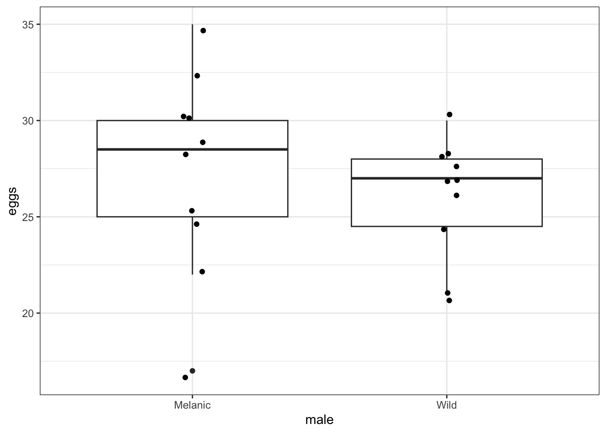
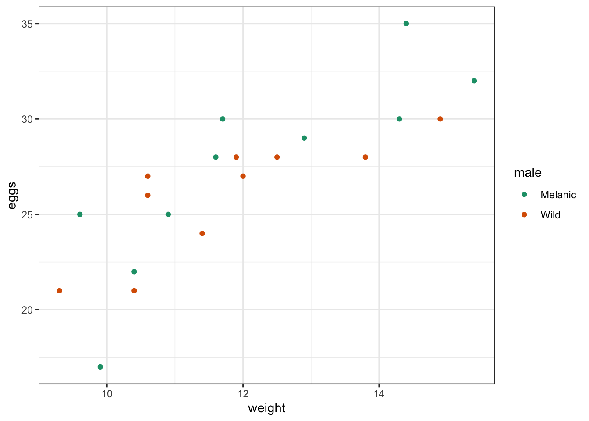
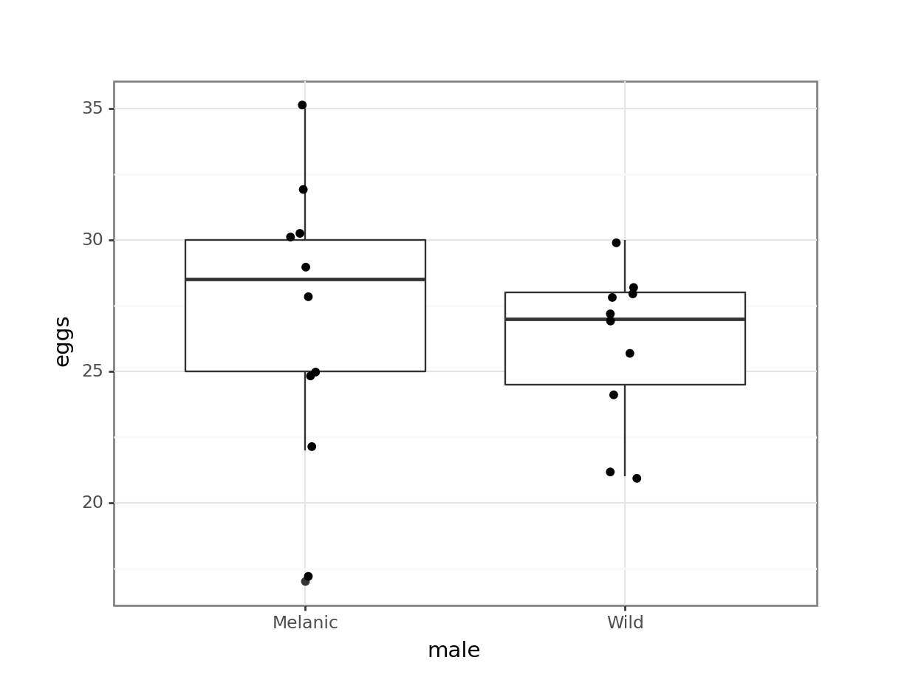
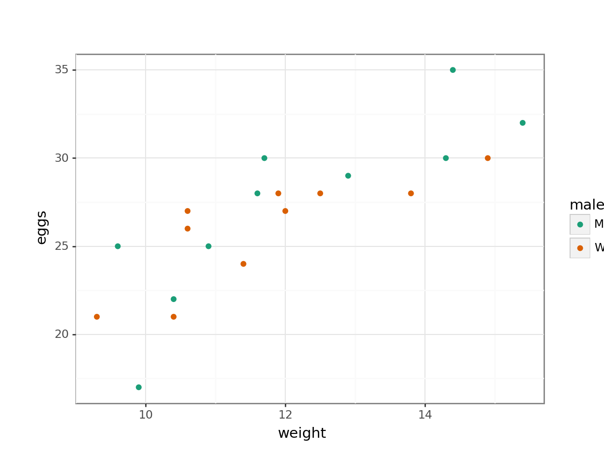

14 Model comparisons
Questions
- How do I compare linear models?
- How do decide which one is the “best” model?
Objectives
- Be able to compare models using the Akaike Information Criterion (AIC)
- Use AIC in the context of Backwards Stepwise Elimination
14.1 Libraries and functions
14.1.1 Libraries
14.1.2 Functions
14.1.3 Libraries
# A fundamental package for scientific computing in Python
import numpy as np
# A Python data analysis and manipulation tool
import pandas as pd
# Simple yet exhaustive stats functions.
import pingouin as pg
# Python equivalent of `ggplot2`
from plotnine import *
# Statistical models, conducting tests and statistical data exploration
import statsmodels.api as sm
# Convenience interface for specifying models using formula strings and DataFrames
import statsmodels.formula.api as smf14.1.4 Functions
# Reads in a .csv file
pandas.read_csv()
# Creates a model from a formula and data frame
statsmodels.formula.api.ols()14.2 Purpose and aim
In the previous example we used a single data set and fitted five linear models to it depending on which predictor variables we used. Whilst this was fun (seriously, what else would you be doing right now?) it seems that there should be a “better way”. Well, thankfully there is! In fact there a several methods that can be used to compare different models in order to help identify “the best” model. More specifically, we can determine if a full model (which uses all available predictor variables and interactions) is necessary to appropriately describe the dependent variable, or whether we can throw away some of the terms (e.g. an interaction term) because they don’t offer any useful predictive power.
Here we will use the Akaike Information Criterion in order to compare different models.
14.3 Data and hypotheses
This section uses the data/CS5-ladybird.csv data set. This data set comprises of 20 observations of three variables (one dependent and two predictor). This records the clutch size (eggs) in a species of ladybird, alongside two potential predictor variables; the mass of the female (weight), and the colour of the male (male) which is a categorical variable.
14.4 Backwards Stepwise Elimination
First, we load the data and visualise it:
ladybird <- read_csv("data/CS5-ladybird.csv")
head(ladybird)# A tibble: 6 × 4
id male weight eggs
<dbl> <chr> <dbl> <dbl>
1 1 Wild 10.6 27
2 2 Wild 10.6 26
3 3 Wild 12.5 28
4 4 Wild 11.4 24
5 5 Wild 14.9 30
6 6 Wild 10.4 21We can visualise the data by male, so we can see if the eggs clutch size differs a lot between the two groups:
ggplot(ladybird,
aes(x = male, y = eggs)) +
geom_boxplot() +
geom_jitter(width = 0.05)
We can also plot the egg clutch size against the weight, again for each male colour group:
# visualise the data
ggplot(ladybird,
aes(x = weight, y = eggs,
colour = male)) +
geom_point() +
scale_color_brewer(palette = "Dark2")
ladybird_py = pd.read_csv("data/CS5-ladybird.csv")We can visualise the data by male, so we can see if the eggs clutch size differs a lot between the two groups:
(ggplot(ladybird_py,
aes(x = "male", y = "eggs")) +
geom_boxplot() +
geom_jitter(width = 0.05))
We can also plot the egg clutch size against the weight, again for each male colour group:
(ggplot(ladybird_py,
aes(x = "weight", y = "eggs",
colour = "male")) +
geom_point() +
scale_color_brewer(type = "qual",
palette = "Dark2"))
We can see a few things already:
- There aren’t a huge number of data points in each group, so we need to be a bit cautious with drawing any firm conclusions.
- There is quite some spread in the egg clutch sizes, with two observations in the
Melanicgroup being rather low. - From the box plot, there does not seem to be much difference in the egg clutch size between the two male colour groups.
- The scatter plot suggests that egg clutch size seems to increase somewhat linearly as the weight of the female goes up. There does not seem to be much difference between the two male colour groups in this respect.
14.4.1 Comparing models with AIC (step 1)
We start with the complete or full model, that takes into account any possible interaction between weight and male.
Next, we define the reduced model. This is the next, most simple model. In this case we’re removing the interaction and constructing an additive model.
# define the full model
lm_full <- lm(eggs ~ weight * male,
data = ladybird)# define the additive model
lm_add <- lm(eggs ~ weight + male,
data = ladybird)We then extract the AIC values for each of the models:
# create the model
model = smf.ols(formula= "eggs ~ weight * C(male)", data = ladybird_py)
# and get the fitted parameters of the model
lm_full_py = model.fit()# create the additive linear model
model = smf.ols(formula= "eggs ~ weight + C(male)", data = ladybird_py)
# and get the fitted parameters of the model
lm_add_py = model.fit()We then extract the AIC values for each of the models:
lm_full_py.aic98.04206256815984lm_add_py.aic97.19572958073036Each line tells you the AIC score for that model. The full model has 4 parameters (the intercept, the coefficient for the continuous variable weight, the coefficient for the categorical variable male and a coefficient for the interaction term weight:male). The additive model has a lower AIC score with only 3 parameters (since we’ve dropped the interaction term). There are different ways of interpreting AIC scores but the most widely used interpretation says that:
- if the difference between two AIC scores is greater than 2, then the model with the smallest AIC score is more supported than the model with the higher AIC score
- if the difference between the two models’ AIC scores is less than 2 then both models are equally well supported
This choice of language (supported vs significant) is deliberate and there are areas of statistics where AIC scores are used differently from the way we are going to use them here (ask if you want a bit of philosophical ramble from me). However, in this situation we will use the AIC scores to decide whether our reduced model is at least as good as the full model. Here since the difference in AIC scores is less than 2, we can say that dropping the interaction term has left us with a model that is both simpler (fewer terms) and as least as good (AIC score) as the full model. As such our additive model eggs ~ weight + male is designated our current working minimal model.
14.4.2 Comparing models with AIC (step 2)
Next, we see which of the remaining terms can be dropped. We will look at the models where we have dropped both male and weight (i.e. eggs ~ weight and eggs ~ male) and compare their AIC values with the AIC of our current minimal model (eggs ~ weight + male). If the AIC values of at least one of our new reduced models is lower (or at least no more than 2 greater) than the AIC of our current minimal model, then we can drop the relevant term and get ourselves a new minimal model. If we find ourselves in a situation where we can drop more than one term we will drop the term that gives us the model with the lowest AIC.
Drop the variable weight and examine the AIC:
[1] 118.7093Drop the variable male and examine the AIC:
Drop the variable weight and examine the AIC:
# create the model
model = smf.ols(formula= "eggs ~ C(male)", data = ladybird_py)
# and get the fitted parameters of the model
lm_male_py = model.fit()
# extract the AIC
lm_male_py.aic116.7092646564482Drop the variable male and examine the AIC:
# create the model
model = smf.ols(formula= "eggs ~ weight", data = ladybird_py)
# and get the fitted parameters of the model
lm_weight_py = model.fit()
# extract the AIC
lm_weight_py.aic95.52601286248304Considering both outputs together and comparing with the AIC of our current minimal model, we can see that dropping male has decreased the AIC further, whereas dropping weight has actually increased the AIC and thus worsened the model quality.
Hence we can drop male and our new minimal model is eggs ~ weight.
14.4.3 Comparing models with AIC (step 3)
Our final comparison is to drop the variable weight and compare this simple model with a null model (eggs ~ 1), which assumes that the clutch size is constant across all parameters.
Drop the variable weight and see if that has an effect:
# create the model
model = smf.ols(formula= "eggs ~ 1", data = ladybird_py)
# and get the fitted parameters of the model
lm_null_py = model.fit()
# extract the AIC
lm_null_py.aic115.21783038624153The AIC of our null model is quite a bit larger than that of our current minimal model eggs ~ weight and so we conclude that weight is important. As such our minimal model is eggs ~ weight.
So, in summary, we could conclude that:
Female size is a useful predictor of clutch size, but male type is not so important.
At this point we can then continue analysing this minimal model, by checking the diagnostic plots and checking the assumptions. If they all pan out, then we can continue with an ANOVA.
14.5 Notes on Backwards Stepwise Elimination
This method of finding a minimal model by starting with a full model and removing variables is called backward stepwise elimination. Although regularly practised in data analysis, there is increasing criticism of this approach, with calls for it to be avoided entirely.
Why have we made you work through this procedure then? Given their prevalence in academic papers, it is very useful to be aware of these procedures and to know that there are issues with them. In other situations, using AIC for model comparisons are justified and you will come across them regularly. Additionally, there may be situations where you feel there are good reasons to drop a parameter from your model – using this technique you can justify that this doesn’t affect the model fit. Taken together, using backwards stepwise elimination for model comparison is still a useful technique.
Performing backwards stepwise elimination manually can be quite tedious. Thankfully R acknowledges this and there is a single inbuilt function called step() that can perform all of the necessary steps for you using AIC.
This will perform a full backwards stepwise elimination process and will find the minimal model for you.
Yes, I could have told you this earlier, but where’s the fun in that? (it is also useful for you to understand the steps behind the technique I suppose…)
When doing this in Python, you are a bit stuck. There does not seem to be an equivalent function. If you want to cobble something together yourself, then use this link as a starting point.
14.6 Exercises
We are going to practice the backwards stepwise elimination technique on some of the data sets we analysed previously.
For each of the following data sets I would like you to:
- Define the response variable
- Define the relevant predictor variables
- Define relevant interactions
- Perform a backwards stepwise elimination and discover the minimal model using AIC
NB: if an interaction term is significant then any main factor that is part of the interaction term cannot be dropped from the model.
Perform a BSE on the following data sets:
data/CS5-trees.csvdata/CS5-pm2_5.csv
14.6.1 BSE: Trees
14.6.2 BSE: Air pollution
14.7 Summary
- We can use Backwards Stepwise Elimination (BSE) on a full model to see if certain terms add to the predictive power of the model or not
- The AIC allows us to compare different models - if there is a difference in AIC of more than 2 between two models, then the smallest AIC score is more supported